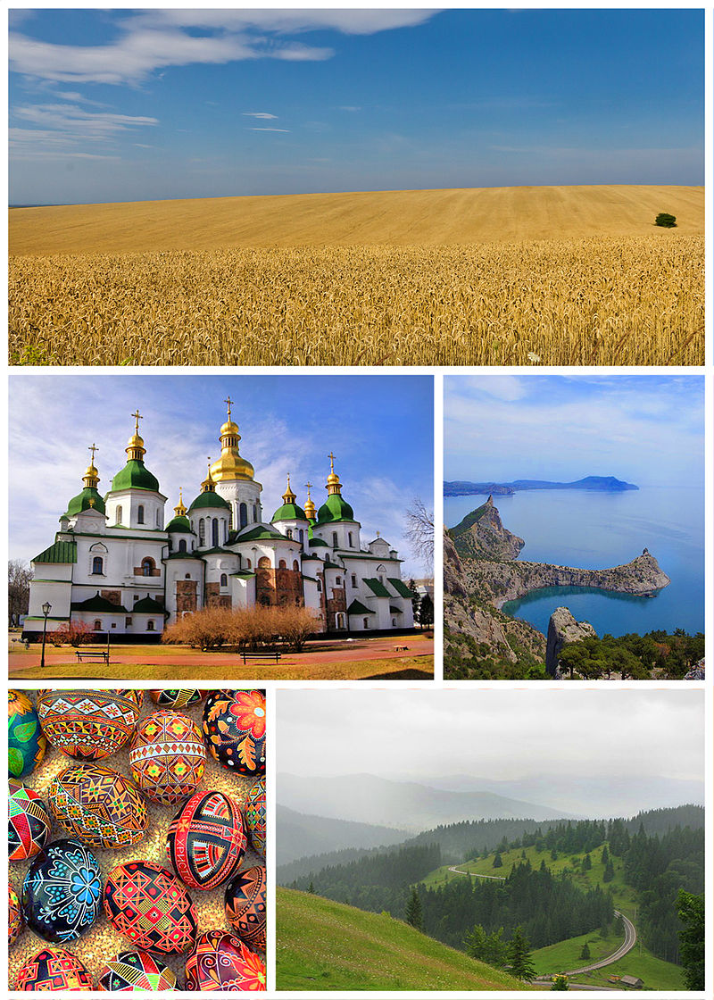
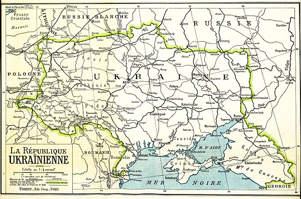
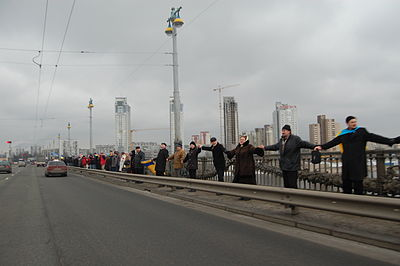
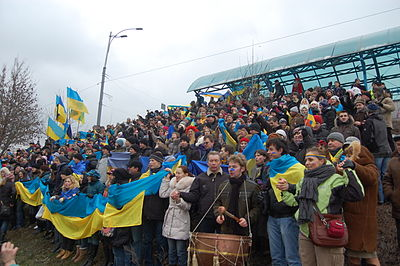

День Соборності України
Матеріал з Вікіпедії — вільної енциклопедії.
День Собо́рності України — свято України, яке відзначають щороку 22 січня в день проголошення Акту Злуки Української Народної Республіки й Західноукраїнської Народної Республіки, що відбулося в 1919 році.
Зміст
- Статус
- Історія свята
- Значення Дня соборності
- Увічнення пам'яті
- Див. також
- Примітки
- Джерела
- Посилання
Статус
Офіційно в Україні День Соборності відзначають з 1999 року.
Свято встановлено в Україні «…враховуючи велике політичне та історичне значення об'єднання Української Народної Республіки і Західноукраїнської Народної Республіки для утворення єдиної (соборної) української держави…» згідно з Указом Президента України «Про День соборності України» від 21 січня 1999 року № 42/99.
Цього дня прийнято також згадувати іншу подію, яка відбулась рівно на рік раніше 22 січня 1918 р. — прийняття IV Універсалу УЦР, яким проголошувалася повна незалежність УНР.
Деякий час, з 30 грудня 2011 року, згідно Указу, на той час Президента України Віктора Януковича, День Соборності на офіційному рівні було скасовано і натомість встановлено «День Соборності та Свободи України». Однак 13 листопада 2014 року Указом Президента України Петра Порошенка свято було відновлено.
Історія свята
Початки ідеї соборності
Ідея соборності бере свій початок від об'єднання давньоруських земель навколо князівського престолу в Києві, а її філософське коріння сягає часів Візантії. Протягом століть її практичним втіленням займались українські гетьмани Богдан Хмельницький, Іван Мазепа, Петро Дорошенко, Пилип Орлик. У XVIII — початку XX ст., коли українські землі були поділені між сусідніми державами: Польщею, Московією, Румунією, Австро-Угорщиною, ця ідея знайшла своє відображення у працях найкращих вітчизняних мислителів, оскільки для боротьби за свої національні інтереси Україні була вкрай важливою територіальна єдність.
Підготовка Акту злуки
У результаті ухвалення III-го Універсалу Української Центральної Ради 7 листопада 1917 р. була проголошена Українська Народна Республіка, до складу якої увійшло 9 українських губерній. Під впливом цих подій в жовтні 1918 р. у Львові представники західноукраїнських політичних партій створили Українську Національну Раду, а 19 жовтня того ж року було проголошено утворення Західноукраїнської Народної Республіки. Відтоді між урядами УНР і ЗУНР велися переговори про втілення ідеї соборності. 1 грудня 1918 р. у Фастові був підписаний «Передвступний договір» про об'єднання УНР і ЗУНР, у якому було заявлено про непохитний намір в найкоротший строк створити єдину державу.
Восени 1918 року після перемоги революції в Австро-Угорській імперії, на уламках монархії утворилися незалежні держави: Чехословацька Республіка, Австрійська Республіка, Угорщина, а також (як наслідок збройного повстання 1 листопада 1918 року у Львові та інших містах цього краю) Західноукраїнська Народна Республіка, Королівство сербів, хорватів і словенців, Польська Республіка.
Уряд Західноукраїнської Народної Республіки — Державний секретаріат — у своїй зовнішній політиці під тиском народних мас та Української Галицької армії на перше місце поставив питання державного об'єднання з Наддніпрянською Україною. Досягнення державного об'єднання розглядалося, по-перше, як втілення в життя вікового прагнення українського народу до державної єдності, а по-друге, як засіб об'єднати сили в боротьбі проти зазіхання Польщі на українські землі.
Проте голова Української Національної Ради Євген Петрушевич застерігав, що об'єднуватися з гетьманською Україною на цьому етапі недоцільно, бо в «14 пунктах», оголошених американським президентом Вудро Вільсоном, народам Австро-Угорщини забезпечувалося право самовизначення, а Росія в той час розглядалася як єдина держава. Отже, злука з гетьманською Україною загрожувала б Східній Галичині також опинитися в складі «єдиної Росії».
В умовах політичної і дипломатичної ізоляції уряд Західноукраїнської Народної Республіки звернувся за допомогою до демократичних утворень на східних землях України.
Зазбручанська Українська національна рада надіслала до Києва свою делегацію для переговорів із гетьманом Павлом Скоропадським. Після зміни влади переговори велися з Директорією. Вже 1 грудня членами Ради державних секретарів ЗУНР Лонгином Цегельським і Д. Левицьким у Фастові було укладено «передвступний договір» з Директорією УНР про «злуку обох українських держав в одну державну одиницю». 3 січня 1919 року Українська Національна Рада Західноукраїнської Народної Республіки у місті Станіславі схвалила закон про об'єднання Західноукраїнської Народної Республіки з Наддніпрянською Українською Народною Республікою в Народну Республіку. 21 січня 1919 р. в Хусті Всенародні збори ухвалили приєднати до Української Народної Республіки Закарпаття[5]. Наступного дня у Києві в урочистостях з нагоди свята Злуки брала участь делегація — тридцять шість чоловік — ЗУНР.
Проголошення злуки
Проголошення злуки було призначено на 12:00 годину 22 січня 1919 року, тобто першу річницю проголошення четвертого універсалу про повну незалежність України.
22 січня було проголошено всенародним і державним святом. День видався погідний та гарний, з легким морозом. Київ був прикрашений національними синьо-жовтими прапорами, гербами. О 9:00 годині ранку в усіх церквах відправляли богослужіння.
Головні урочистості проголошення злуки проходили на Софійській площі. При вході з вулиці Володимирської на Софійську площу було зведено тріумфальну арку, прикрашену старовинними гербами. Рівно о 12:00 годині розпочалася урочиста церемонія проголошення Акта злуки. На масовому вічі посол Західноукраїнської Народної Республіки Л. Цегельський зачитав та передав грамоту Національної Ради «Про об'єднання Західноукраїнської Народної Республіки з Великою Східною Україною» голові Директорії Володимиру Винниченку.
Член Директорії Федір Швець урочисто зачитав Універсал Директорії:
- «…Віднині во єдино зливаються століттями відірвані одна від одної частини єдиної України — Галичина, Буковина, Закарпаття і Наддніпрянська Україна. Здійснилися віковічні мрії, для яких жили і за які вмирали найкращі сини України. Віднині є тільки одна незалежна Українська Народна республіка. Віднині український народ увільнений могутнім поривом своїх власних сил, має змогу об'єднати всі зусилля своїх синів для створення нероздільної, незалежної української держави, на добро і щастя українського народу.»
Після урочистого проголошення злуки на Софійській площі відбувся молебень, а потім — військовий парад під керівництвом полковника Івана Чмоли. Приймав парад полковник Євген Коновалець.
22 січня 1919 р. у Києві на Софійській площі відбулися урочисті збори, на яких був проголошений Акт Злуки (об'єднання) українських земель, засвідчений Універсалом про об'єднання УНР і ЗУНР в єдину Велику Україну. Ним стверджувалось об'єднання двох тодішніх держав, що постали на уламках Російської і Австро-Угорської імперій в єдину соборну Українську державу, яка відтоді ставала гарантом загальнонаціональних інтересів українців. Століттями розірваний український народ визволився з неволі і возз'єднався на своїй землі в єдиній Українській державі.
Акт Злуки був глибоко детермінований історично і спирався на споконвічну мрію українського народу про незалежну, соборну національну державу. Він став могутнім виявом волі українців до етнічної й територіальної консолідації, свідченням їх самовизначення, становлення політичної нації. Уперше за 600 років він став реальним кроком до об'єднання українських земель, що вплинув на подальші національно-політичні процеси в Україні.
Наступного дня, 23 січня, розпочався Трудовий конгрес України, який мав виконувати функцію всеукраїнського парламенту. Акт злуки було затверджено вищим законодавчим органом України. На основі цих рішень Західноукраїнська Народна Республіка перейменовувалась у Західну область УНР (ЗО УНР). Єдиним державним гербом став тризуб замість раніше затвердженого для ЗУНР золотого лева на блакитному полотні. У той же час злиття урядів, армій, законодавчих органів УНР та ЗУНР відклали до скликання Установчих Зборів об'єднаної України, як це й передбачалося ухвалою Української Національної Ради від 3 січня.
Міжвоєнний період
Об'єднання українських земель відбулося юридично та політично. Проте державне об'єднання не відбулося. Тому перед фактом військової катастрофи восени 1919 і в 1920 роках уряди та військове командування ЗУНР та УНР дбали передусім про свої регіональні інтереси. Це яскраво проявилося після того, як представники Галицької армії в односторонньому порядку без урахування думки уряду УНР 6 листопада 1919 року підписали з Добровольчою армією Зятківський договір про припинення бойових дій між Галицькою армією і силами Білого руху, укладення між цими силами військового союзу і перехід Галицької армії в розпорядження генерала Денікіна. Дані угоди були повторно затверджені в Одесі 17 листопада 1919 року із керівництвом Новоросійської області ЗСПР, і договір був ратифікований у Вінниці 19 листопада, після чого був реалізований.
В процесі переговорів Симона Петлюри з Польським керівництвом та в підписанні ним 21 квітня 1920 року Варшавського договору, згідно з яким, за визнання Польщею Директорії УНР, очолюваної С. Петлюрою, та надання військової допомоги проти більшовицьких урядів Росії та України. Польщі передавалася Галичина, Холмщина, Підляшшя й Західна Волинь (зокрема повіти Рівненський, Дубнівський та частину Кременецького).
Поділ українських земель між більшовиками та Польською республікою за Ризьким договором, а також Королівством Румунія (Сен-Жерменський мирний договір (1919), Бессарабський протокол), Чехословацькою республікою (Тріанонський договір) знову відсунув на невизначений період возз'єднання всіх українських земель. Частково воно відбулося лише у вересні 1939 року, але не як втілення в життя віковічних прагнень українського народу, а як результат таємної радянсько-німецької змови від 23 серпня 1939 про сфери впливу, а також гри на патріотичних почуттях населення Західної України. Надії народу не справдилися. «Свято свободи, що прийшло зі Сходу», обернулося для населення жорстокими буднями.
Це об'єднання виявилось нетривким, і невдовзі історія розпорядилась так, що окремі частини українських земель знову опинились у складі різних держав. А методи, якими було здійснено нове об'єднання «сходу» і «заходу» в 1939 році, полишили в думах мільйонів українців незагоєні рани.
Перше офіційне святкування Соборності
За часів радянського режиму День Соборності не відзначався, більше того - будь-яка згадка про нього знищувалася, цей день вважали "контрреволюційним святом"[9].
Свято Соборності, вперше за 20 років, було урочисто відзначено на офіційному рівні 22 січня 1939 року. Відбулось це у Карпатській Україні (м. Хуст), на той час — автономній республіці Чехословацької республіки. Це був чудовий привід нагадати закарпатцям про волю, висловлену на з'їзді Всенародних зборів українців у Хусті 21 січня 1919-го про приєднання Закарпаття до Української Народної Республіки зі столицею у Києві, і легітимізувати тим самим свою програму побудови Української держави на базі «закарпатського П'ємонту».
Це була не просто маніфестація, а найбільша за 20 років перебування краю у складі Чехословаччини демонстрація місцевого населення за участю 30 тис. люду, яке з'їхалось до столиці Карпатської України з усіх куточків краю.
- Від самого ранку поїзд за поїздом вбігає, українське населення спішить до столиці на маніфестації. Довжезний ряд селянських возів з близької околиці, вантажні самоходи з дальших сіл, а поїзди з найдальших закутин привозять учасників. Тисячі возів, роверів, авт заповнили бічні вулиці. Сотні, ба тисячі синьо-жовтих прапорів по вулицях, ці дві барви сьогодні домінують. Уніформи, народні одяги з різних околиць по хустських вулицях маком цвітуть. Зразу можна розрізнити з одягу: Гуцульщина, Хустщина, Волівщина, Севлющина і т. д. Навіть із далекої Ужанщини та Середнянщини людей повно. Це ж річниця української соборності, велике свято! Під синьо-жовтими прапорами маршують із різних напрямків, найбільше від станції, з піснями на устах. Волівщина заступлена сильно; саме тільки Волове послало аж трьома величезними вантажними автами своїх заступників, щось біля двісті людей. (…) Біля тридцять тисяч учасників зійшлося з цілої Карпатської України. Це найбільші збори, які я під цими зеленими Карпатами бачив за останнє двадцятиріччя. Колись просвітянські збори в Ужгороді були справді величавими, але сьогоднішні збори — рекорд (…) Десь біля одинадцятої години після Богослужби сформувався величезний похід, замаяли сотні рідних прапорів, і ми перейшли з площі Волошина на головну вулицю. Оркестри заграли українські походові пісні. Старовинний хустський замок ще не бачив такого величавого всенародного здвигу! Три години тривав похід вулицями нашої столиці, і аж біля чотирнадцятої години розпочались святочні збори на площі". — Зі спогадів письменника та журналіста Василя Ґренджи-Донського про святкування 20-ї річниці Акту Злуки в Хусті 22 січня 1939-го
Символічно, що Закарпаття вписало й наступну сторінку в історію Дня соборності України: через незнання комуністами історії України, в 1946 році саме 22 січня Верховна Рада УРСР включила Закарпаття до складу УРСР.
Живий ланцюг 1990
21 січня 1990 р. патріотичні сили організували «живий ланцюг» між Києвом, Львовом та Івано-Франківськом як символ духовної єдності людей східних і західних земель України. Основне русло суцільним ланцюгом починалося в Івано-Франківську від Центрального народного дому (вул. Шевченка, 1) і тягнулося до Стрия, де приєднувалося незначне відгалуження з поодиноких учасників із закарпатського напрямку. Зі Стрия живий шерег прямував до Львова, звідти — до Тернополя. Далі маршрут проходив через Рівне, Житомир — і до Софійської площі в Києві. За різними оцінками, участь в акції взяли від 0,5 до 3 мільйонів українців. Також цього дня акція на підтримку «Живого ланцюга» відбулась у Харкові.
Живі ланцюги в 2000-ні
 Наприкінці 2000-х років почали відроджувати традицію створення «живих ланцюгів», що символізують єдність українського народу. В 2008 — 2011 роках у Києві такі «ланцюги» утворювали на мосту Патона. Таким чином символічно об'єднували правий та лівий береги Дніпра. Основним організатором цієї акції виступало Братство козацького бойового звичаю «Спас». Найбільшого розмаху акція досягла 2011 року, коли на міст Патона прийшло понад 1000 учасників. Того року до організації акції долучилися такі громадські організації як Відсіч, Молода просвіта, Національний альянс, Молодіжний націоналістичний конгрес, студентський туристичний клуб «Скіфи» КНЕУ. 22 січня 2011 р. «живий ланцюг» утворено у понад 20 містах України. Так, у Львові близько п'яти тисяч осіб утворили «живий ланцюг» від пам'ятника Тарасу Шевченку до пам'ятника Степану Бандері.
Тимчасові зміни з 2011 року
30 грудня 2011 року Президент України Віктор Янукович видав Указ, яким скасував Указ Президента України Віктора Ющенка 2005 року про встановлення Дня Свободи 22 листопада (присвяченого подіям Помаранчевої революції), та Указ Президента України Леоніда Кучми 1999 року про встановлення Дня соборності України 22 січня, водночас з оголошенням 22 січня Днем Соборності та Свободи України. Отже, офіційно 22 січня у 2012—2014 роках в Україні відзначали саме День Соборності та Свободи України.
Офіційне відновлення
Указом Президента України № 871/2014 «Про День Соборності України» відзначення свята офіційно відновлено, а День Соборності та Свободи України - скасовано. Однак відновлення було зроблено не шляхом поновлення Указу № 42 від 21 січня 1999 року, який було скасовано Януковичем, а шляхом нового указу. Згідно з ним, свято відзначають «…у день проголошення в 1919 році Акта злуки Української Народної Республіки та Західноукраїнської Народної Республіки…».
Значення Дня соборності
Століттями розірваний український народ об'єднався на своїй землі в єдиній Українській державі — Наддніпрянщина вийшла з Російської, а Західна Україна — з Австро-Угорської імперії.
Акт возз'єднання, злуки двох Україн був радше символічним знаком прагнення єдності, бо в керівництві країни спільності тоді не було. «Безпорадність проводу впливала на загальний настрій, — писала сучасниця тих подій, історик Наталя Полонська-Василенко. — Україна, затиснута між двома потужними силами — Антантою з півдня і більшовизмом з півночі, — не мала сил для боротьби. Військо розбігалося, ширилося безладдя. У таких умовах пройшла майже непоміченою подія, яка мала велике ідейне значення: свято Соборності України. 22 січня 1919 року на Софійській площі проголошено злуку УНР і ЗУНР… Але під тиском невідрадних подій свято пройшло сухо, тихо».
Увічнення пам'яті
Вулиці, названі на честь Дня соборності України, є в таких містах: Броди, Дрогобич, Жмеринка, Івано-Франківськ (вулиця 22 Січня), Київ (проспект Соборності), Полтава (вулиця Соборності), Кривий Ріг (вулиця Соборності), Луцьк (проспект Соборності), Тернопіль (проспект Злуки), Прилуки (Соборна вулиця), Ріпки (вулиця Соборності) та інших.
Див. також
Примітки
- Указ Президента України від 21 січня 1999 року N 42/99 «Про День соборності України». Архів оригіналу за 2 березня 2022. Процитовано 14 березня 2022.
- Янукович скасував свято Помаранчевої революції [Архівовано 7 січня 2012 у Wayback Machine.] (Перевірено 30 грудня 2011)
- Указ Президента України № 1209/2011 «Про відзначення в Україні деяких пам'ятних дат та професійних свят». Архів оригіналу за 3 січня 2012. Процитовано 30 грудня 2011.
- Указ Президента України № 871/2014. Архів оригіналу за 23 січня 2019. Процитовано 22 січня 2019.
- Ухвала Всенародних Зборів угорських українців 21 січня 1919 року. Архів оригіналу за 20 грудня 2016. Процитовано 22 січня 2017.
- Байло Андрій. Тимчасовий союз УГА з Добрармією та його наслідки : [] // Україна: культурна спадщина, національна свідомість, державність : Збірник наукових праць. — Львів : Інститут українознавства ім. І. Крип’якевича НАН України, 2009. — Вип. 18. — С. 353-362.
- Томюк І. М. Причини та наслідки вимушеного об'єднання Української галицької армії з Добровольчою армією уряду А. І. Денікіна (листопад – грудень 1919 р.) // Вісник Національного університету «Львівська політехніка» : Тематичний випуск «Держава та армія». — 2008. — Вип. 612. — С. 86-91. — ISSN 0321-0499.
- Солдатенко В. Ф. {{{Заголовок}}}.
- День Соборності України 2023: особлива дата в історії та привітання зі святом. Unian.lite, О. Зайцева. 22.01.2023, 08:00
- Указ Президії Верховної Ради УРСР від 22.01.1946 «Про утворення Закарпатської області в складі Української РСР». Архів оригіналу за 20 грудня 2016. Процитовано 22 січня 2017.
- «Живий ланцюг»: Галичина + Київ. Архів оригіналу за 12 лютого 2015. Процитовано 16 лютого 2015.
- В'ячеслав Мавричев, Віта Дубовик (22 січня 2021). "Це було демонстрацією, що Україна хоче незалежності" — учасниця першого "Ланцюга єдності" у Харкові. Суспільне. Архів оригіналу за 29 січня 2021. Процитовано 22 січня 2021.
- Братство козацького бойового звичаю «Спас» [Архівовано 14 березня 2022 у Wayback Machine.]
- З'єднаємо береги Дніпра «живим» ланцюгом! [Архівовано 17 листопада 2011 у Wayback Machine.] Сумно?
- 22 січня, «живим ланцюгом», в Києві з'єднали два береги Дніпра!. Архів оригіналу за 21 березня 2012. Процитовано 28 січня 2011.
- У Львові стояли «живим ланцюгом», а в Луганську розгортали прапор [Архівовано 23 січня 2019 у Wayback Machine.] Українська правда
- Янукович переніс День Свободи на іншу дату. Архів оригіналу за 12 лютого 2012. Процитовано 14 березня 2022.
Джерела
- Як святкували День злуки в Карпатській Україні (ФОТО)
- «Community in Binghamton Marks Ukrainian Day» // «The Ukrainian Weekly», № 30, 13 February 1971, p. 2 [Архівовано 3 грудня 2013 у Wayback Machine.] (англ.)
- Про День соборності України | від 21.01.1999 № 42/99
- Живий ланцюг у Києві 22 січня 2009 року
- Українська Соборність — реальна чи міфічна [Архівовано 10 січня 2017 у Wayback Machine.]
- 3D панорама. Віче з нагоди Дня Соборності України у Львові. 22 січня 2011 р. [Архівовано 22 вересня 2013 у Wayback Machine.]
Посилання
Вікісховище має мультимедійні дані за темою:День Соборності України
- День соборності України [Архівовано 9 серпня 2016 у Wayback Machine.] // Юридична енциклопедія : [у 6 т.] / ред. кол.: Ю. С. Шемшученко (відп. ред.) [та ін.]. — К. : Українська енциклопедія ім. М. П. Бажана , 1998. — Т. 2 : Д — Й. — 744 с. — ISBN 966-7492-00-8.
- Соборність [Архівовано 19 листопада 2016 у Wayback Machine.] // Юридична енциклопедія : [у 6 т.] / ред. кол.: Ю. С. Шемшученко (відп. ред.) [та ін.]. — К. : Українська енциклопедія ім. М. П. Бажана, 2003. — Т. 5 : П — С. — 736 с. — ISBN 966-7492-05-2.
- Соборність державна // Українська мала енциклопедія : 16 кн. : у 8 т. / проф. Є. Онацький. — Накладом Адміністратури УАПЦ в Аргентині. — Буенос-Айрес, 1965. — Т. 7, кн. XIV : Літери Сен — Сті. — С. 1790-1792. — 1000 екз.